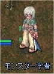
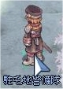
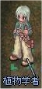

画像にリンクがはってあるものは、クリックすると別窓で大きめサイズが表示されます。
[ルミス=ブラック]
所在地；ミッドガルド連合軍駐屯地（188,254） |
|  |
[駐屯地警備兵]
所在地；ミッドガルド連合軍駐屯地3時方向 |
  |
[テリス=ブラック]
所在地；ミッドガルド連合軍駐屯地（240,270） |
  |
[駐屯地警備兵]
所在地；ミッドガルド連合軍駐屯地9時方向 |
 |
back
(c) Gravity Co., Ltd. & Lee MyoungJin(studio DTDS). All rights reserved.
(c) GungHo Online Entertainment, Inc. All Rights Reserved.
当コンテンツの再利用（再転載・配布など）は、禁止しています。